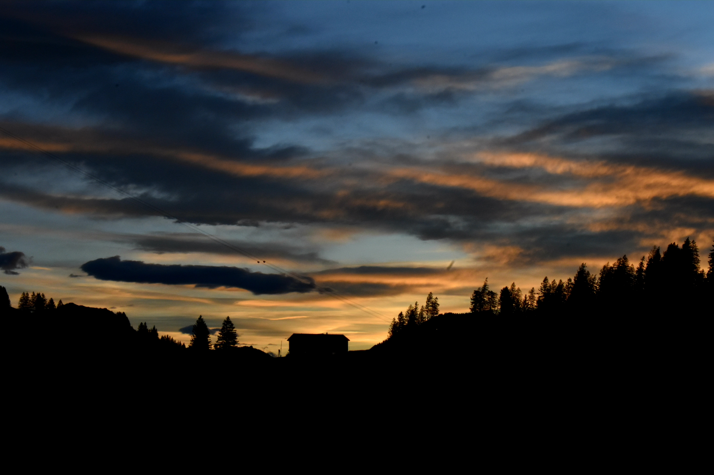
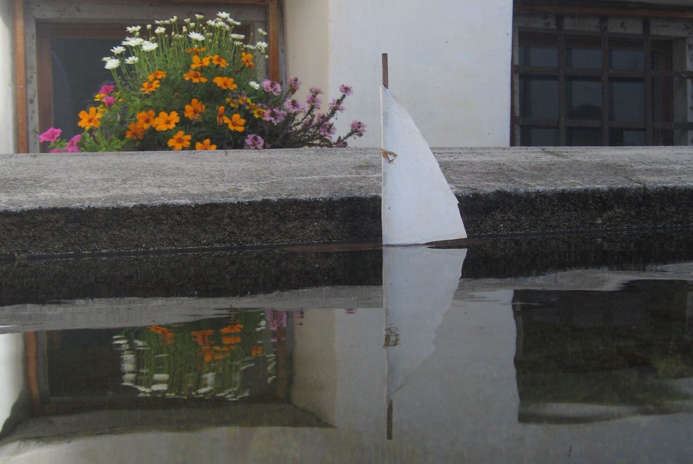
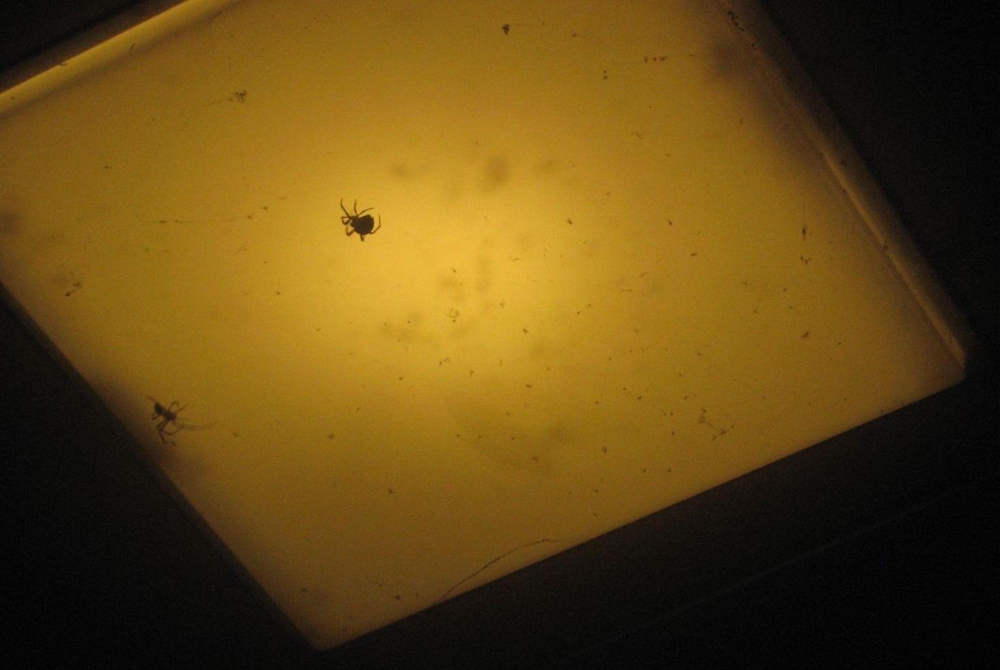

×


by Flurin Berweger" style="width:100%;max-width:400px" onclick="openModal(this)">
by Keani Barbazza" style="width:100%;max-width:400px" onclick="openModal(this)">
by Keani Barbazza" style="width:100%;max-width:400px" onclick="openModal(this)">
by Keani Barbazza" style="width:100%;max-width:400px" onclick="openModal(this)">
Kontakt
Falls sie selbst fotografieren und Ihre Werke auf dieser Webseite ausstellen möchten, können Sie mich unter folgenden Kontaktdaten erreichen:
Flurin Berweger
e263225@edu.sbl.ch
0767367249